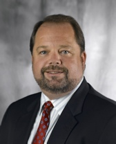

Kai R Schmidt
Kai R Schmidt is President & COO and Member of the Board of MetalsBridge, LLC.
In 2001, Mr Schmidt merged hos steel trading and his supply chain management business (MetalsBridge) into MAN AG's North American trading group, Ferrostaal Incorporated (FSI), retaining sole control of other, non-steel trading and distribution activities.
Post merger, Schmidt joined FSI in 2002 to integrate the steel trading and supply chain management divisions.
He also served as Chief Information Officer ("CIAO") of Houston-based Ferrostaal Metalls Group, Inc. ("FMG") with offices in 60 countries. Thereafter, he worked directly with the CEO to support the growth and restructuring of FMG's international steel business. Mr Schmidt spearheaded the structured trade finance and MetalsBridge programs, therewith shifting FMG's focus away from its traditional spot trading business.
In addition to his responsibilities as Senior Vice-President and CIAO of MAN Ferrostaal AG's North American holding company in Cleveland, Ohio, Schmidt also served as Head of FSI's Supply Chain Management Division until 2010, responsibe for the introduction of Ferrostaal Automotive GmbH's value-added kitting, pre-assembly and just-in-time sequendce delivery of complete modules to assembly lines.
From 2009 iuntil 2012, Schmidt served as Senior Vice President at Solar Trust of America, LLC ("STA"). STA was one of the world's leading solar thermal energy development companies. During his tenure at STA, Schmidt also served as President of STA's Supply CHain MAnagement (SCM) division, STA Industries, LLC, and helped differentiate STA from all other solar power companies by developing a unique, vertically integrated SCM business model.
Schmidt has more than 30 years of diversified experience in international steel commodity trading, logistics, structured trade finance, and supply chain management activities. His career includes senior management positiona with some of the world's leading industrial and commodities trading companies, including Thyssen AG (now ThyssenKrupp AG) ; Thyssen Stahlunion GmbH; Thyssen Stahlhandel Berlin GmbH; HABAG HmbH; TradeArbed Export (Luxembourg) S.A. (now Areclor Mittal) and TradeArbed Dubai, United Arab Emirates.
A graduate of the University of Western Ontario and Huron Uiversity College in Ontario, Canada, Schmidt continued hos postgraduate studies at rhe London School of Economics & Political Science (LSE), University of London, England obtaining his Master of Science degree in 1988. He was awarded his diploma in economics with a mark of "Distinction".
Mr Schmidt also serves on a number of boards. He was also co-founder of Clevelnd Capital Corporation, LLC.